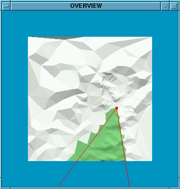
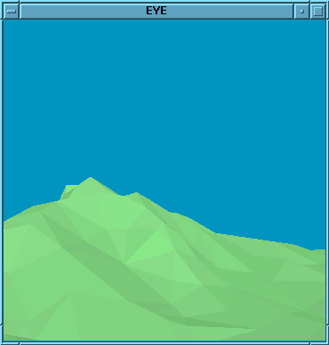
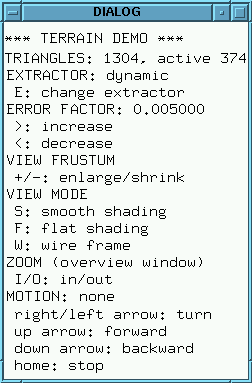

Terrain demo
This demo flies over a terrain.
How to run the demo
The demo is available ad demo2.
This demo requires a two-dimensional MT embedded in three dimensions,
representing a scalar field (no two different z values for the same
(x,y) pair),
with approximation errors associated with its tiles.
Let the MT be contained in a file named xxx.mtf,
tile errors be contained in file xxx.err.
To run the demo, type:
For instance, try demo2 ../data_demo2/marcy128.
To exit the demo, strike key "Q" or "q" when the focus is in one
of the demo windows.
Inside the demo
The program extracts a triangle mesh that, inside the view frustum,
has an approximation errror decreasing with the distance from the
viewpoint; outside the view frustum, the mesh is arbitrarily coarse.
The extraction parameters are:
- a focus condition s.t. active triangles are the ones intersecting a
a wedge
- a resolution filter condition s.t. a triangle is feasible if its error
is below a threshold. The threshold has its minimum at the vertex of the
wedge increases while moving away.
The user can control the movement of the viewpoint, and change the
extraction parameters.
Two windows are used for visualization:
-
Overview window:
it provides a top-view of the whole terrain showing the wedge
corresponding to the current view frustum.
Green triangles are active, grey triangles are not active.
-
Eye window:
it shows the terrain as viewed by an observer having the
wedge as its view frustum.
A third window shows the available commmands for interacting with the
program.



User interaction
User interaction is done by pressing the following keys when the
mouse focus is in one of the three windows of the program.
Viewpoint movement
- left arrow / right arrow: turn left / right
- up arrow / down arrow: start moving forward / backward
- end: stop moving
The directions of turns are referred to the current view direction.
Triangle mesh extraction
- e / E: switch extractor type (dynamic / local)
- > / <: increase / decrease error threshold used inside the wedge
- + / -: enlarge / shrink the viewing angle
Drawing
- w / W: switch to wireframe style (hidden line)
- f / F: switch to solid style, flat shading
- s / S: switch to solid style, smooth shading (smooth shading is only
used for active triangles, vertex nornals are computed on-line on
the current triangulation)
- i / o: zoom in / out
Zooming only applies to the overview window.
Termination
Remarks
To avoid collision, the height of the viewpoint is dynamically changed based
on the max height of the terrain in the current frame. For some pairs of
frames, the max height changes suddently, thus causing the viewpoint to jump
up or down.
Visualization in hidden wireframe in the eye window is slow because it
makes use of stencil functions.